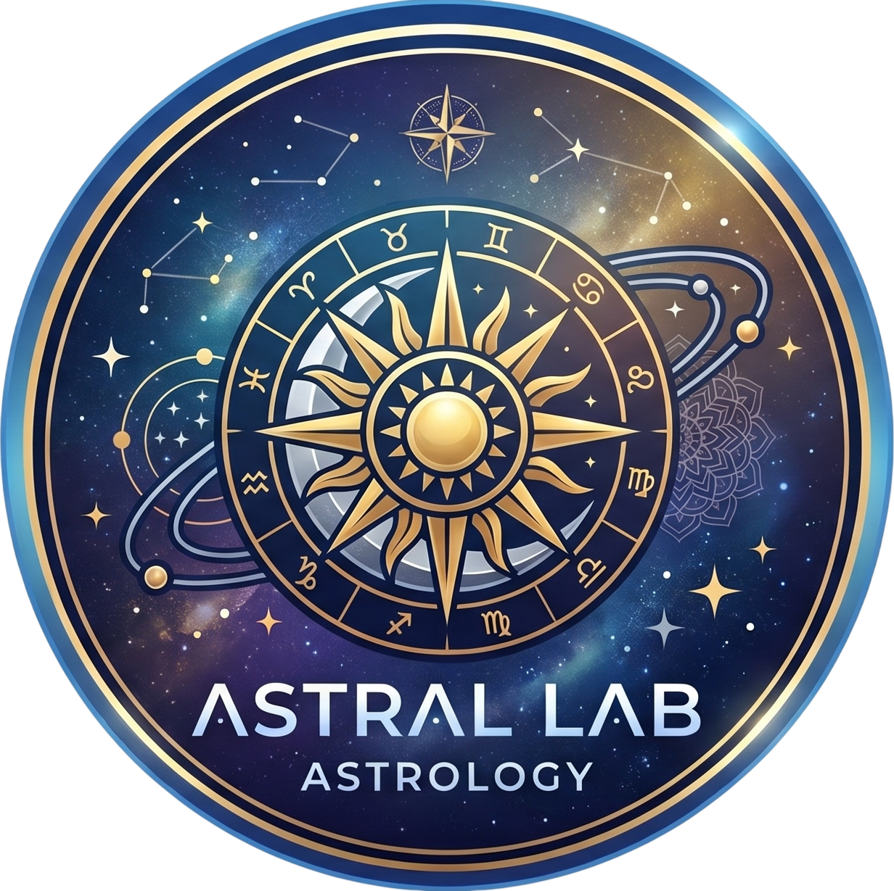

Astral Lab: Natal Chart & Astrology NEW!
Professional natal charts, real-time transits & aspect grids — 100% offline with scientific-grade VSOP87/ELP-2000 precision.
What Is Astral Lab? The Professional Offline Natal Chart & Astrology App
Astral Lab is a powerful natal chart and astrology tool designed for professional astrologers and serious enthusiasts who refuse to compromise on precision. Unlike other astrology apps that send your birth data to external servers, Astral Lab runs 100% offline — all complex mathematical calculations are performed directly on your device using scientific-grade VSOP87 and ELP-2000 algorithms.
Why Choose Astral Lab?
- Absolute Privacy (Offline): The app requires zero internet permission. Your birth data, location, and saved profiles never leave your phone. No tracking, no telemetry, no external servers.
- Scientific Precision: Powered by high-accuracy VSOP87 and ELP-2000 algorithms. Planetary positions match NASA ephemerides perfectly.
- One-Time Purchase: No monthly subscriptions. Astral Lab is a single purchase, completely ad-free, with all premium features unlocked from day one.
- Modern Material 3 Interface: Premium, fluid user experience with smooth navigation, dynamic dark mode, and crisp visual aspect grids.
Key Features
- Instant Natal Charts: High-precision natal chart calculations for any date, time, and geographic location worldwide.
- Real-Time Transits: Track current planetary movements and overlay them on any natal chart instantly.
- Global Offline Database: Access thousands of cities with accurate historical timezone data — no GPS or mobile data required.
- Advanced Aspect Grids: Complete, intuitive analysis of planetary relationships and angular distances.
- Custom Profile Management: Save and manage unlimited natal charts for family, friends, or clients.
Who Is Astral Lab For?
- Professional Astrologers who need reliable, accurate chart calculations for client consultations.
- Astrology Enthusiasts who want deep chart analysis without monthly subscription fees.
- Privacy-Conscious Users who refuse to upload sensitive birth data to cloud servers.
- Traveling Practitioners who need offline access in remote areas or during travel.
Technical Specifications
- VSOP87 + ELP-2000 planetary calculations (NASA-grade precision)
- Complete aspect grid with orbs and angular relationships
- Real-time transit tracking and overlay
- Global city database with historical timezone data
- Unlimited profile storage
- 100% offline — zero internet permissions required
- Zero ads, zero trackers, zero data collection
- Android 6.0+ | One-time purchase — $6.99 USD
Frequently Asked Questions
Does Astral Lab require an internet connection?
No. Astral Lab is designed to work 100% offline. The app requires zero internet permissions. All calculations happen on your device.
How accurate are the planetary positions?
Astral Lab uses the same VSOP87 and ELP-2000 algorithms used by professional ephemeris software. Positions match NASA data perfectly.
Is there a subscription fee?
No. Astral Lab is a one-time purchase at $6.99 USD. All features are unlocked permanently. No subscriptions, no in-app purchases.
Can I save charts for multiple people?
Yes. Astral Lab supports unlimited profiles. Save charts for family, friends, or clients and switch between them instantly.
One-Time Purchase. Lifetime Access.
Download Astral Lab now for a single payment of $6.99 USD. No subscriptions, no hidden fees. Take full control of your astrological work with a professional tool that respects your privacy.
Reading a Chart the Way an Astrologer Does
An offline natal chart app is a document reader with arithmetic attached. The arithmetic is the easy part and it is already correct; what the tool cannot do for you is teach you the order in which a chart gets read, and that order is the whole difference between a wall of symbols and an argument. What follows is the reading order, the three places beginners get it wrong, and what to do with a chart once you can read it.
The order: three placements, then aspects, then transits
The single most common mistake is reading a chart by hunting for the one thing you already wanted to know. The working order is fixed and it starts with the three placements, because they carry the most weight and the least ambiguity. The big three, explained together is the shortest correct treatment, and the fuller version works through what each of the three governs and where they contradict each other. A chart where sun and moon disagree is a chart with an actual question in it.
Only after the three do you look at aspects, because aspects are relationships between the placements and you cannot read a relationship before you know the terms. Aspects explained sorts them by difficulty, which is the right order; the hard aspects carry more information precisely because they are the ones in tension. Advanced pattern work is for after the basics have stopped being interesting.
Planets, signs and houses are three different axes
Beginners consistently collapse the three axes, and the collapse produces readings that feel specific and are not. Planets in natal charts gives each planet its job, and the job is a question the planet asks rather than a trait it owns. Rising sign and the ascendant covers the third axis and includes the chart ruler, which is the piece that makes the whole system hang together and which almost nobody teaches first.
Signs are the third axis and they are the one people overuse. Lunar zodiac signs makes the point that the moon rules a sign does not make the moon the most important thing in your life. Moon sign astrology and moon sign as emotional blueprint are the long versions, and both are careful to say the moon is a description of default weather rather than a verdict.
Transits are a separate document with a separate clock
A natal chart is fixed and a transit overlay moves, and mixing the two produces most of the confident nonsense in amateur astrology. Planetary transits is the entry point, and the part beginners skip is the part that matters: transits are read against the natal chart, never alone. The overlay is a question being asked of a particular configuration, and a question with no chart underneath it is just an ephemeris.
This is also where the app earns its keep, because a natal chart is a fixed document and transiting positions are the one thing that genuinely needs a live or dated calculation. If your chart app cannot show you what moved on a given day, the rest of the reading is a snapshot you will misattribute. A complete beginners guide to charts is the reference to sit alongside while you do your first few.
Timing practice with a chart in hand
Once the reading works, the chart stops being the exercise and becomes the planning layer for the rest of the practice. Practical planetary magic is a seven-day frame that assumes you already have a working and want better timing, which is the correct order of operations. Lunar and planetary magic and its longer treatment give the correspondence layer, and AIKENDÚ works from a different tradition entirely.
A caveat on speed that belongs in any honest timing work: what an acceleration servitor actually changes and what a construct can reach about time both conclude that the price of a faster answer is paid in accuracy, and neither finds a mechanism worth the price. Read them before you build anything to move a deadline.
Using a chart as a thinking instrument
Divination and chart work share a function that has nothing to do with prediction: both externalise a decision you have not yet made into a form you can argue with. [Aruspecía on how divination actually works](aruspecía-how-to-use-divination) and divination as a thinking practice make that case from two directions, and both are more useful for the chart than they are for the deck. A chart you disagree with has done its job.
The place where this is easiest to forget is when a chart becomes a script. Comparing the traditions is the broad version and the two narrower passes and a third take different lines on what the comparison is for. On the altered-states side, psychonautics and altered states and the critique of infusing a servitor with consciousness both belong in the same shelf: what happens when a chart, a practice and a state of mind are treated as more interchangeable than they are.
The neighbouring apps, and why the overlap is not redundancy
Several tools in this library share raw material with a natal chart app and none of them duplicate it. Lunar phase magic and the complete lunar ritual set use the moon's position rather than its sign. Full moon charging nights is a dated reference. A witch's year with the lunar phase app is the long read on what a year of tracking actually changes.
If you are deciding what to install rather than what to read, the comparisons are already written. Free lunar phase versus the paid calculator and the free calculator guide answer the narrow version, while the best lunar calendar apps and the best moon phase journals cover the calendar side. The calculator's own review, here, and its methods and accuracy tell you what to check on the numbers before you trust them. An eclipse season reference is at lunar eclipse rituals, and a single-night procedure at the eclipse ritual.
A chart is an argument about a life, written in a notation you have to learn. Learn the notation, then argue.
Thirty entries from the library
- lunar
-
Practical Planetary Magic: Getting Something Out of the Week — The seven classical planets as a working calendar: what each day is actually good for, where the planetary hours are worth the effort, and the honest mechanism…
Lunar and Planetary Magic — A complete working guide to lunar and planetary magic covering lunar and planetary magic. Includes step-by-step protocol, honest failure modes, and FAQ.
Big Three Explained: What Your Sun, Moon & Rising
Birth Chart Complete Guide: Read Your Natal Chart Like
Planets in Natal Charts Explained
Planetary Transits Guide: How Current Planets Affect Your Daily
Rising Sign Complete Guide: Ascendant, All 12 Signs, Chart
Astrology Aspects Explained: Conjunction, Opposition, Trine, Square & Sextile
Lunar Zodiac Signs: Moon Rules Each Zodiac Sign Explained
Moon Sign Astrology: Complete Guide to All 12 Moon
Sun, Moon, and Ascendant: The Big Three
Moon Sign Complete Guide: Emotional Blueprint, All 12 Signs
Advanced Natal Aspect Patterns
A Witch's Year with the Lunar Phase App (2026)
AIKENDÚ — A complete working guide to AIKENDÚ: what it is, the lunar and planetary magic structure behind it, and the full protocol. Includes step-by-step protocol, honest…
Best Lunar Calendar Apps (2026)
Best Moon Phase Journal Apps (2026)
Free Lunar Phase Calculator: Track Moon Cycles Online (2026)
Free Lunar Phase vs. Lunar Phase Calculator App: When
Full Moon Charging Nights 2026 (2026)
Lunar and Planetary Magic — A complete working guide to lunar and planetary magic covering lunar and planetary magic. Includes step-by-step protocol, honest failure modes, and FAQ.
Lunar Eclipse Ritual for Releasing: Step-by-Step Guide 2026
Lunar Eclipse Rituals 2026 (2026)
Lunar Magic Rituals & Spells: Complete Guide
Lunar Phase Calculator App Review: Best Moon Tracker for
Lunar Phase Calculator Guide: Methods & Accuracy (2026)
Moon Magic: Complete Guide to Lunar Phases for Rituals
- comparative
-
Comparing Magical Traditions — A complete working guide to comparing magical traditions covering comparing magical traditions. Includes step-by-step protocol, honest failure modes, and FAQ.
Comparing Magical Traditions — A practical framework for comparing chaos magic, Thelema, Wicca and ceremonial systems: what each optimises, what transfers between them, and why the differences…
Comparing Magical Traditions — A complete working guide to comparing magical traditions covering comparing magical traditions. Includes step-by-step protocol, honest failure modes, and FAQ.
- psychonaut
-
Psychonautics and Altered States — A complete working guide to psychonautics and altered states covering psychonautics and altered states. Includes step-by-step protocol, honest failure modes,...
Infusing Consciousness Into a Servitor: What the Phrase Buys — Infusing consciousness is the most anthropomorphic claim in servitor craft. Here is what the phrase actually describes, why the feeling of a person is an…
- divination
-
Aruspecía: How Divination Is Actually Supposed to Work — Divination works as a vocabulary for decisions, not as a prediction engine. Present-tense questions, the Barnum effect, and what consistency can and cannot tell you.
Divination as a Thinking Practice, Not a Predictor — No system shows evidence of predictive access. What structured random systems do show is usefulness as thinking tools, and this is how to practise them without…
- time
-
FASTAR and the Price of a Faster Answer: What — A servitor built to speed up your results does not make the universe quicker. It changes the speed of your own reading, and that is where accuracy goes. A field…
FOTAMECUS and the Control of Time: What a Construct — Most time magic claims four things at once. Three of them are not yours to control, and a specification written over the fourth is a machine, not a miracle. A…